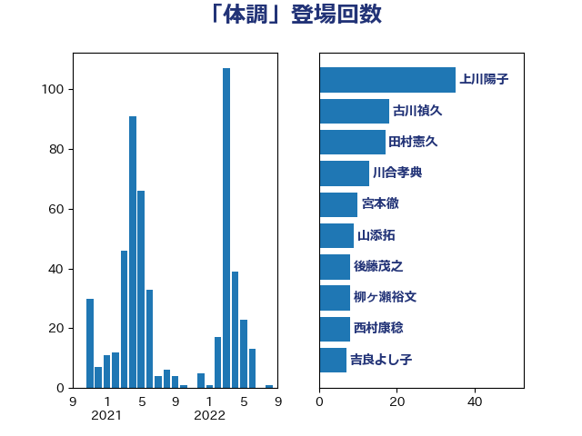

単語「体調」

| 上川陽子 | 自由民主党 | 35 回 |
| 古川禎久 | 自由民主党 | 18 回 |
| 田村憲久 | 自由民主党 | 17 回 |
| 川合孝典 | 国民民主党 | 13 回 |
| 宮本徹 | 日本共産党 | 10 回 |
| 山添拓 | 日本共産党 | 9 回 |
| 後藤茂之 | 自由民主党 | 8 回 |
| 柳ヶ瀬裕文 | 日本維新の会 | 8 回 |
| 西村康稔 | 自由民主党 | 8 回 |
| 吉良よし子 | 日本共産党 | 7 回 |
| 山井和則 | 立憲民主党 | 7 回 |
| 川田龍平 | 立憲民主党 | 7 回 |
| 田村智子 | 日本共産党 | 7 回 |
| 福島みずほ | 社会民主党 | 7 回 |
| 高木かおり | 日本維新の会 | 6 回 |
| 伊藤孝恵 | 国民民主党 | 5 回 |
| 塩川鉄也 | 日本共産党 | 5 回 |
| 大口善徳 | 公明党 | 5 回 |
| 寺田静 | 無所属 | 5 回 |
| 末松信介 | 自由民主党 | 5 回 |
| 石川香織 | 立憲民主党 | 5 回 |
| 東徹 | 日本維新の会 | 4 回 |
| 松沢成文 | 日本維新の会 | 4 回 |
| 羽生田俊 | 自由民主党 | 4 回 |
| 中島克仁 | 立憲民主党 | 3 回 |
| 小泉進次郎 | 自由民主党 | 3 回 |
| 梅村聡 | 日本維新の会 | 3 回 |
| 横沢高徳 | 立憲民主党 | 3 回 |
| 蓮舫 | 立憲民主党 | 3 回 |
| 辻元清美 | 立憲民主党 | 3 回 |
| 伊藤孝江 | 公明党 | 2 回 |
| 住吉寛紀 | 日本維新の会 | 2 回 |
| 加藤勝信 | 自由民主党 | 2 回 |
| 吉田統彦 | 立憲民主党 | 2 回 |
| 大島敦 | 立憲民主党 | 2 回 |
| 室井邦彦 | 日本維新の会 | 2 回 |
| 寺田学 | 立憲民主党 | 2 回 |
| 小川淳也 | 立憲民主党 | 2 回 |
| 小渕優子 | 自由民主党 | 2 回 |
| 山口那津男 | 公明党 | 2 回 |
| 山田勝彦 | 立憲民主党 | 2 回 |
| 岸信夫 | 自由民主党 | 2 回 |
| 島村大 | 自由民主党 | 2 回 |
| 平木大作 | 公明党 | 2 回 |
| 徳永久志 | 立憲民主党 | 2 回 |
| 本村伸子 | 日本共産党 | 2 回 |
| 森屋隆 | 立憲民主党 | 2 回 |
| 清水真人 | 自由民主党 | 2 回 |
| 石井苗子 | 日本維新の会 | 2 回 |
| 竹内真二 | 公明党 | 2 回 |
| 萩生田光一 | 自由民主党 | 2 回 |
| 鈴木宗男 | 日本維新の会 | 2 回 |
| 長妻昭 | 立憲民主党 | 2 回 |
| 長浜博行 | 無所属 | 2 回 |
| 階猛 | 立憲民主党 | 2 回 |
| 三浦信祐 | 公明党 | 1 回 |
| 下村博文 | 自由民主党 | 1 回 |
| 下条みつ | 立憲民主党 | 1 回 |
| 串田誠一 | 日本維新の会 | 1 回 |
| 丸川珠代 | 自由民主党 | 1 回 |
| 井出庸生 | 自由民主党 | 1 回 |
| 仁木博文 | 無所属 | 1 回 |
| 倉林明子 | 日本共産党 | 1 回 |
| 古賀友一郎 | 自由民主党 | 1 回 |
| 坂本哲志 | 自由民主党 | 1 回 |
| 塩村あやか | 立憲民主党 | 1 回 |
| 塩田博昭 | 公明党 | 1 回 |
| 安江伸夫 | 公明党 | 1 回 |
| 宮口治子 | 立憲民主党 | 1 回 |
| 小沢雅仁 | 立憲民主党 | 1 回 |
| 小西洋之 | 立憲民主党 | 1 回 |
| 尾辻秀久 | 無所属 | 1 回 |
| 山本太郎 | れいわ新選組 | 1 回 |
| 岸田文雄 | 自由民主党 | 1 回 |
| 岸真紀子 | 立憲民主党 | 1 回 |
| 川崎ひでと | 自由民主党 | 1 回 |
| 平井卓也 | 自由民主党 | 1 回 |
| 打越さく良 | 立憲民主党 | 1 回 |
| 本田太郎 | 自由民主党 | 1 回 |
| 松川るい | 自由民主党 | 1 回 |
| 柚木道義 | 立憲民主党 | 1 回 |
| 柴田巧 | 日本維新の会 | 1 回 |
| 森山浩行 | 立憲民主党 | 1 回 |
| 水岡俊一 | 立憲民主党 | 1 回 |
| 池下卓 | 日本維新の会 | 1 回 |
| 浅野哲 | 国民民主党 | 1 回 |
| 浜田聡 | NHK党 | 1 回 |
| 清水貴之 | 日本維新の会 | 1 回 |
| 渡辺周 | 立憲民主党 | 1 回 |
| 熊谷裕人 | 立憲民主党 | 1 回 |
| 牧原秀樹 | 自由民主党 | 1 回 |
| 田嶋要 | 立憲民主党 | 1 回 |
| 田所嘉徳 | 自由民主党 | 1 回 |
| 田村まみ | 国民民主党 | 1 回 |
| 石井啓一 | 公明党 | 1 回 |
| 石川大我 | 立憲民主党 | 1 回 |
| 稲富修二 | 立憲民主党 | 1 回 |
| 竹谷とし子 | 公明党 | 1 回 |
| 細野豪志 | 自由民主党 | 1 回 |
| 舩後靖彦 | れいわ新選組 | 1 回 |
| 芳賀道也 | 国民民主党 | 1 回 |
| 菅家一郎 | 自由民主党 | 1 回 |
| 菅義偉 | 自由民主党 | 1 回 |
| 野上浩太郎 | 自由民主党 | 1 回 |
| 鎌田さゆり | 立憲民主党 | 1 回 |
| 長友慎治 | 国民民主党 | 1 回 |
| 音喜多駿 | 日本維新の会 | 1 回 |
| 高階恵美子 | 自由民主党 | 1 回 |
| 鰐淵洋子 | 公明党 | 1 回 |